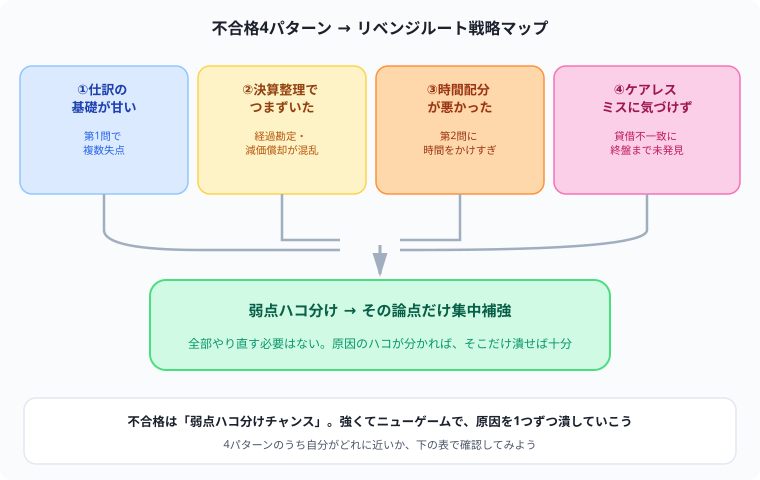
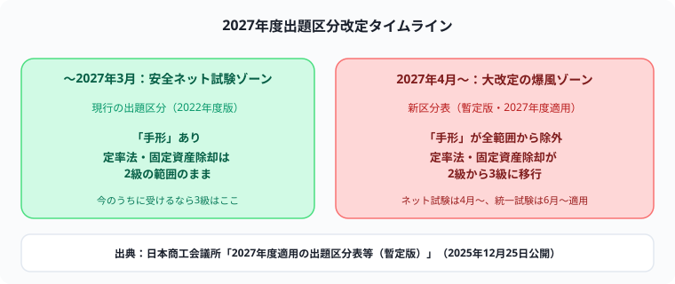

簿記3級に落ちた…次どうする？不合格後の立て直し方【2026年版】
「簿記3級なんて簡単でしょ」という周りの声を聞いていたぶん、不合格の結果はよけいに応えますよね。「まさか自分が3級で……」というショックな気持ち、分かります。
でも先に言っておきます。簿記3級は、思われているほど簡単な試験ではありません。1回落ちたくらいで、自分の理解力を疑う必要は全くないです。感情が少し落ち着いたら、この記事で一緒に原因を整理して、次に向けて動き出しましょう。
まずは今回の結果を見て、「仕訳・試算表・時間配分」のどこで止まったかを一つだけ書き出してください。原因が言葉になると、再受験までの勉強は「不安」ではなく修正する課題に変わります。
日本商工会議所の直近公表値では、統一試験第173回（2026年6月14日）は実受験者14,359人中4,854人が合格し、合格率は33.8%でした。ネット試験は2026年4月〜6月に64,183人中28,546人が合格し、合格率は44.5%でした。方式・実施回・集計期間ごとに数字は異なりますが、今回不合格だったことは珍しいことではありません。
出典：日本商工会議所「簿記 受験者データ」（2026年8月31日確認）
まず「なぜ落ちたか」を冷静に分析する
気持ちが落ち着いたら、感情より先に「原因のパターン分け」から始めましょう。3級の不合格は、だいたい次の4パターンのどれかに当てはまります。
| 不合格パターン | 特徴 | 対策の方向性 |
|---|---|---|
| 仕訳の基礎が甘かった | 仕訳で複数失点し、勘定科目の分類があやふや | 仕訳を毎日反復し、資産・負債・純資産・収益・費用の5要素分類を体に染み込ませる |
| 決算整理でつまずいた | 経過勘定・減価償却・貸倒引当金の仕訳が混乱し、試算表・精算表で失点 | 「なぜその仕訳になるか」を図解で理解し直す。丸暗記から卒業する |
| 時間配分が悪かった | 一部の問題に時間をかけすぎて、残りの問題が間に合わなかった | 時間を計った問題演習で、解く順番と見直し時間を決める |
| ケアレスミスに気づけなかった | 精算表・試算表の貸借が合わないまま終盤まで気づかなかった | 貸借合計をこまめにチェックする癖をつける |

簿記3級が難しい本当の理由
「3級は簡単」というイメージは、正直もう古いです。仕訳・帳簿記入・決算整理・試算表（精算表）作成まで、限られた試験時間の中で正確にこなす必要があり、実際には多くの受験生がつまずきます。しかも、日本商工会議所が2025年12月に公開した2027年度適用の出題区分表（暫定版）では、これまで2級の範囲だった論点の一部（定率法による減価償却、固定資産の除却・廃棄など）が3級に移行することが示されており、3級の範囲は2027年4月以降さらに広がる方向にあります（ネット試験は2027年4月〜、統一試験は2027年6月〜適用予定）。「昔の3級は簡単だった」という声があっても、今の3級とは別物だと思ってください。

不合格後の学習 4ステップ
ステップ1：1週間は休む
試験直後に「すぐ次の対策を！」と焦る必要はありません。1週間ほど意識的に休んで、気持ちをリセットしてください。3級はもともと学習範囲がコンパクトなので、休んだ分の遅れはすぐに取り戻せます。
ステップ2：パターンに当てはまる論点だけ集中補強する
全部やり直す必要はありません。得意な部分はそのまま維持して、落ちた原因になったパターンの論点だけを集中してつぶします。決算整理が弱ければ決算整理だけ、時間配分が悪ければ時間配分の練習だけ、1週間程度の集中投下で十分立て直せます。
ステップ3：仕訳と決算整理を優先して見直す
問題を振り返り、仕訳、帳簿、決算整理、試算表・精算表のどこで時間や失点が出たかを分けて練習しましょう。簿記3級は商業簿記3題以内・60分・70%以上が公式の試験条件です。問題ごとの配点や形式は推測せず、直近の演習結果を使って苦手分野と時間配分を決めます。
出典：日本商工会議所「簿記3級 試験科目・注意事項」（2026年8月31日確認）
ステップ4：時間を計って過去問を解く
試験時間は60分です。最後の1〜2週間は、本番を意識して時間を計りながら過去問を解いてください。「第2問に時間をかけすぎて第3問が終わらない」という失敗パターンは、時間配分の練習だけでかなり防げます。
ネット試験を活用して早期リベンジ
統一試験（紙）は年3回（6月・11月・2月）ですが、ネット試験は会場ごとの日程で実施されます。希望会場の空席、施行休止期間、申込期限を確認できる場合は、再受験の候補として検討できます。
出典：日本商工会議所「ネット試験Q&A」、「ネット試験の受験方法」（2026年8月31日確認）
出典：日本商工会議所「ネット試験Q&A」（2026年8月31日確認）
2回目以降で合格する人の共通点
- 原因を明確にしてから再スタートした：「なんとなく全部やり直した」ではなく、つまずいたパターンに絞った効率的な補強をした
- 決算整理を丸暗記でなく仕組みで理解し直した：経過勘定・減価償却の仕訳を、図で「なぜそうなるか」から理解した
- 本番と同じ時間制限で練習した：時間配分・解く順番まで本番を想定した演習をした
- 焦らなかった：「次は絶対に」という執着より「着実に積み上げる」姿勢が結果につながった
まとめ
- 合格率は方式・実施回・集計期間ごとに異なる。公式の受験者データで分母と期間を確認する
- 不合格後はまず「どのパターンに当てはまるか」の原因分析が最初のステップ
- 仕訳、帳簿、決算整理、試算表・精算表のうち、失点した分野を優先して見直す
- ネット試験を再受験候補にするなら、会場日程・空席・休止期間・申込期限を確認する
- 時間配分の練習（時間制限つき問題演習）を取り入れる
今この記事を最後まで読んでくれたあなたは、もう「落ち込んで終わり」ではなく「原因を潰す準備」に入っています。それだけで、何もしなかった人より確実に一歩前に進んでいます。次の結果発表画面で、今度は一緒に「合格」の文字を見ましょう。心から応援しています。
次の一歩は、再受験の候補日を一つ決め、最初の一週間に解く問題集の範囲を一つ書くことです。小さく再開できれば、今回の不合格は次の答案を強くする材料になります。